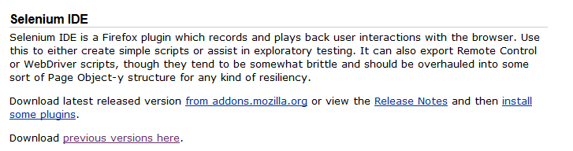
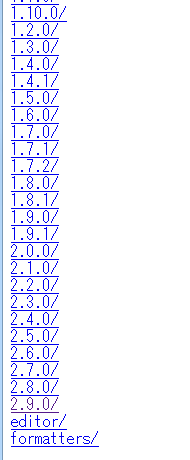
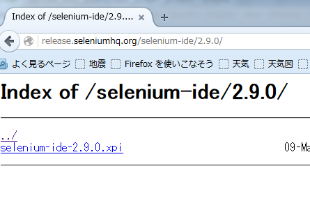
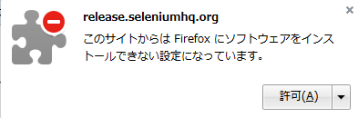
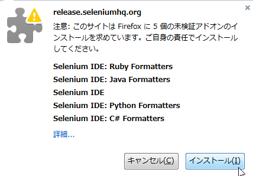
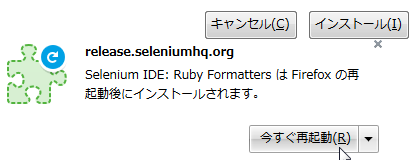

Firefoxアドオンをインストール【別の方法】
注意：Firefoxのバージョンによっては、この方法でインストールできない。
SeleniumはFirefoxが使いやすい。
以下にFirefoxにSeleniumアドオンを追加する手順を示す。【2016年5月時点】
手順
- Firefoxを起動する。
- 公式サイトのダウンロードページにアクセスする。
-
「Selenium IDE」項目の「previous versions here」をクリックする。

-
バージョンを選択する。（手順では 2.9.0/ を選択）

-
xpiファイルをクリックし、道なり操作でアドオンをインストールする。




-
Firefox再起動後、Firefoxの右上メニューに「Se」アイコンが表示されれば成功。